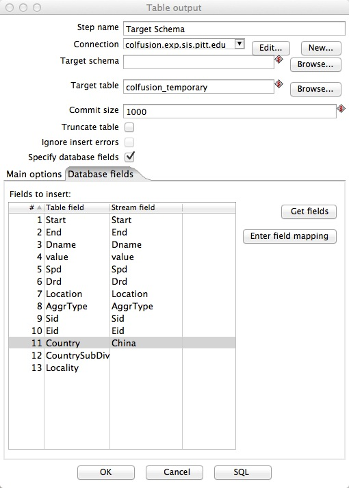

Configure Table Output to Map to our Schema
- We have preconfigured each wrapper template to connect to our database
- All you have to do is map your fields to the fields in our target schema using the Table Output step
- Double-click on the Table Output step.
- The configuration window belonging to this kind of step will appear.
- Go to Database Fields tab, click on Get fields to pull all of the fields from your previous steps.
- The fields on the right are the fields created from the previous steps in your transformation.
- The steps on the left are all of the fields in our target schema.
- If not all of the fields on the left exist, create them and do either:
A. map fields from previous steps to them or
B. add field/value pairs to the Add Constants Step
(note these constant values apply to every row of your output (i.e. your entire dataset)
- When you are done, your Table Output step should look something like this,
but mappings that make sense for your dataset:

- If you can narrow down location to Country, Country Sub-Division, Locality you can
additionally map your location field from your previous steps to
the Country, CountrySubDiv, and/or Locality respectively in our target schema.
- Click OK to finish defining the Table Output step.